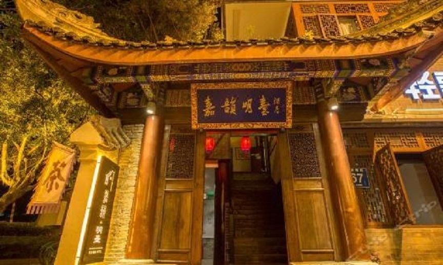

酒店名称：乐山嘉韵·明台酒店
推荐指数：★★★★★
简介：乐山第一家以北欧与原生态结合风格的酒店，住宿也提供地道的乐山小吃，可供在房间或者提供的餐厅食用。住宿距离乐山大佛尽 1.8km, 步行约20分钟即可到达。距离市中心仅一桥之隔，步行700米，约8分钟即可到达，吃喝玩乐一应俱全。距离乐山博物馆仅200米，步行约3分钟到达。所有房间均配备电视，空调，热水淋浴，免费无线网络覆盖每一个房间。
地址：乐山大佛街道，龙泓路,拱桥湾3号 (近乐山大佛博物馆，岷江一桥交通灯)
价格：¥151